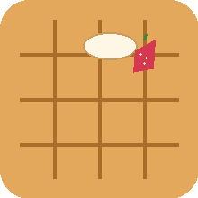

先把签证办妥，再慢慢确认三座城市的住宿。这里按中国普通护照申请比利时短期旅游申根签证整理；递交前以官方最新清单为准。
多国申根行程要向主要目的地申请；如果无法确定主要目的地，再向首次入境国申请。当前第一站是比利时，但酒店尚未确认：预约前要用最终停留天数核对。如果比利时仍是停留最久的国家，或没有单一主要目的地且仍从比利时首次入境，就申请比利时。
比利时驻华官方信息显示，完整材料通常在 2–15 个工作日处理，可最早在出发前 180 天递交；个案或补件可能更久。10 月 3 日出发，建议现在完成预约和材料准备，并至少预留 4–6 周缓冲。
当前 VFS 公示的普通成人短期签证费为 €90 / ¥765，另有 ¥187服务费；递交前请再次核对官网实时费用与可选服务费。